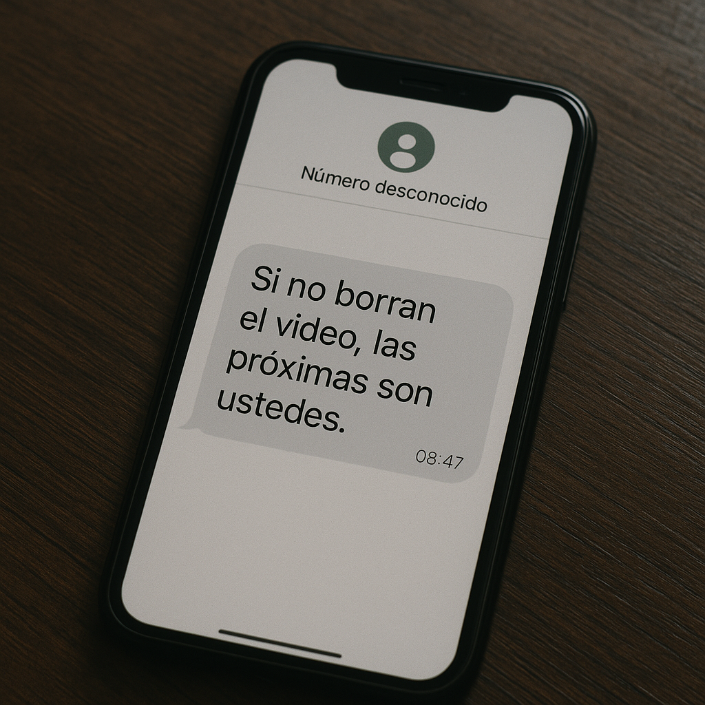

-No mejor no lo subas, mira si después nos pasa algo - le digo.
-No sé yo lo quiero subir, sería injusto si no - dijo Noa media asustada.
- ¿Vos queres que nos pasé algo? – le dije enojada.
-Y bueno hace lo que quieras - dijo molesta, de seguro.
-Quedo el ambiente bastante tenso, pero yo dije:
-Creo que es lo mejor para nosotras y para nuestra seguridad- mientras la abrazaba.
-Está bien - me contesto.
Ese día decidimos no subirlo, pero si buscar ayuda, Noa dijo que su hermano tiene un amigo que es policía se llama Nicolas Laurent lo llamamos y quedamos en que vendría a nuestra casa ese mismo día, cuando llego se presentó le mostramos el video y nos preguntó si queríamos llevar el video a las autoridades y hacer una denuncia nosotras le dijimos que estábamos bastante asustadas y que preferíamos no hacerlo ya que nos habían amenazado desde un numero desconocido, le mostramos el mensaje y dijo esto es bastante grave pero no tengan miedo mientras esto se quede entre nosotros vamos a estar más seguros.
Nos pidió detalles: fecha, hora, hasta cómo nos habíamos dado cuenta de quién era. Yo respondía, aunque cada pregunta me hacía dudar más. ¿Quería ayudarnos… o quería controlarnos?
Después de que Nicolás Laurent se fue de nuestra casa, el silencio se volvió insoportable. Yo no dejaba de pensar en el mensaje:
“Si no borran el video, las próximas son ustedes”.
El miedo me apretaba el pecho, y cada sombra afuera de la ventana parecía observarnos. Noa estaba inquieta, caminaba de un lado a otro, mientras yo trataba de convencerla de que habíamos hecho lo correcto.
Pero dentro mío había una duda creciendo: ¿realmente podíamos confiar en Nicolás?
Confiar en el No confiar en el Atrás